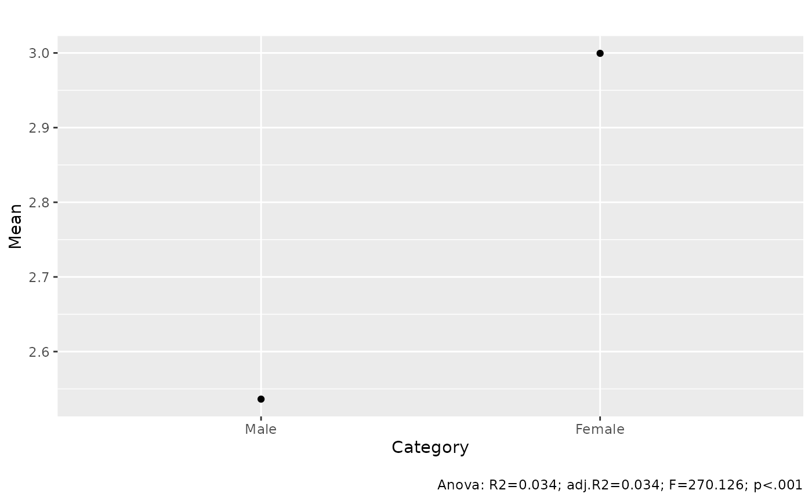
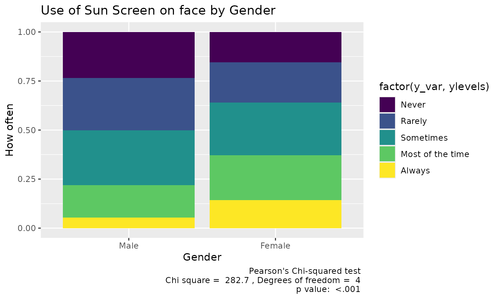
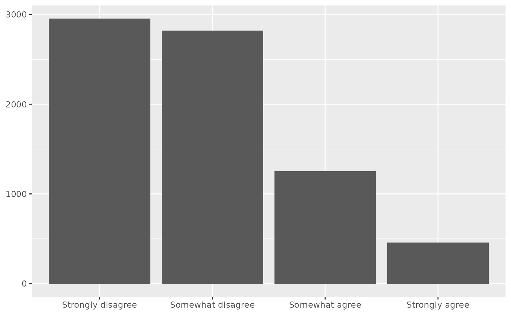
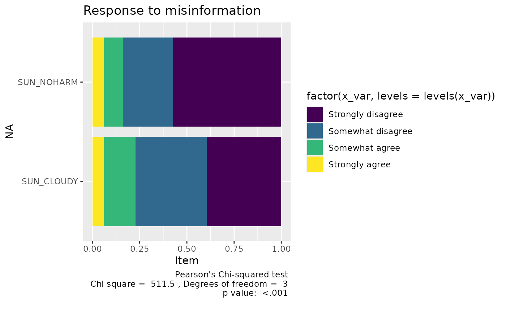

This document shows how to do a number of tasks you may want to do in your poster.
Remember that have data frames and then variables
within the data frame. We generally refer to one variable in a dataframe
as data_frame_name$variable_name. Both must be spelled
exactly correctly and with the right upper and lower case letters.
You also need to make sure that you are using numeric variables when you need numbers.
Get means for groups with an F test.
means_by_group(to_numeric(rss1$SUN_USEFACE),
by =rss1$P_GENDER)## # Mean of When outdoors, how often use sunscreen on face by Panel Profile: Respondent gender
##
## Category | Mean | N | SD
## -----------------------------
## Male | 2.54 | 3675 | 1.17
## Female | 3.00 | 3888 | 1.27
## Total | 2.77 | 7563 | 1.25
##
## Anova: R2=0.034; adj.R2=0.034; F=270.126; p<.001Plot the means by group with an F test
means_by_group(to_numeric(rss1$SUN_USEFACE),
by =rss1$P_GENDER) |> plot()## Warning: Removed 2 rows containing missing values or values outside the scale range
## (`geom_segment()`).
Make a frequency table
data_tabulate(rss1$SUN_CLOUDY, metrics = c("N", "valid"),
remove_na = TRUE)## Agree-disagree: cloudy days don't need to worry about sun (rss1$SUN_CLOUDY) <categorical>
## # total N=7489 valid N=7489
##
## Value | N | Raw % | Valid % | Cumulative %
## ------------------+------+-------+---------+-------------
## Strongly disagree | 2955 | 39.46 | 39.46 | 39.46
## Somewhat disagree | 2823 | 37.70 | 37.70 | 77.15
## Somewhat agree | 1254 | 16.74 | 16.74 | 93.90
## Strongly agree | 457 | 6.10 | 6.10 | 100.00Make a cross tabulation
data_tabulate(rss1$SUN_USEFACE,rss1$P_GENDER ,
remove_na = TRUE, proportions = "column") |>
print_md()| rss1$SUN_USEFACE | Male | Female | Total |
|---|---|---|---|
| Never | 865 (23.5%) | 602 (15.5%) | 1467 |
| Rarely | 976 (26.6%) | 794 (20.4%) | 1770 |
| Sometimes | 1028 (28.0%) | 1049 (27.0%) | 2077 |
| Most of the time | 610 (16.6%) | 890 (22.9%) | 1500 |
| Always | 196 (5.3%) | 553 (14.2%) | 749 |
| Total | 3675 | 3888 | 7563 |
Visualize a cross tab
data_tabulate(rss1$SUN_USEFACE,rss1$P_GENDER ,
remove_na = TRUE, proportions = "column") |> plot() +
labs(title = "Use of Sun Screen on face by Gender",
x = "Gender", y = "How often")
Get the chi square for a cross tab.
data_tabulate(rss1$SUN_USEFACE,rss1$P_GENDER ,
remove_na = TRUE, proportions = "column") |>
data_chisq()##
## Pearson's Chi-squared test
##
## data: X[[i]]
## X-squared = 282.73, df = 4, p-value < 2.2e-16Basic bar chart of one variable.
distribution_bar(rss1$SUN_CLOUDY)
Compare a lot of categorical/nominal variables that all have the same responses in a compact way. There are alot ofpossivllwe ways to do this.
##
## Attaching package: 'dplyr'## The following object is masked from 'package:datawizard':
##
## recode_values## The following objects are masked from 'package:stats':
##
## filter, lag## The following objects are masked from 'package:base':
##
## intersect, setdiff, setequal, union
library(tidyr)
rss1 |> select("SUN_NOHARM", "SUN_CLOUDY") |>
pivot_longer(cols = c("SUN_NOHARM", "SUN_CLOUDY"),
names_to = "variable",
values_to = "response") |>
data_tabulate( "variable", by = "response",
proportions = "row", remove_na = TRUE) |>
plot() -> p
p +
labs(title = "Response to misinformation",
y ="Item"
)
How to summarize the variables in your dataset.
The easiest way is to use the table1 package.
library(gtsummary)
mtcars |> tbl_summary()| Characteristic | N = 321 |
|---|---|
| mpg | 19.2 (15.4, 22.8) |
| cyl | |
| 4 | 11 (34%) |
| 6 | 7 (22%) |
| 8 | 14 (44%) |
| disp | 196 (121, 334) |
| hp | 123 (96, 180) |
| drat | 3.70 (3.08, 3.92) |
| wt | 3.33 (2.54, 3.65) |
| qsec | 17.71 (16.89, 18.90) |
| vs | 14 (44%) |
| am | 13 (41%) |
| gear | |
| 3 | 15 (47%) |
| 4 | 12 (38%) |
| 5 | 5 (16%) |
| carb | |
| 1 | 7 (22%) |
| 2 | 10 (31%) |
| 3 | 3 (9.4%) |
| 4 | 10 (31%) |
| 6 | 1 (3.1%) |
| 8 | 1 (3.1%) |
| 1 Median (Q1, Q3); n (%) | |
Or if you just want to include some of the variables
| ID | Name | Type | Missings | Values | N |
|---|---|---|---|---|---|
| 1 | mpg | numeric | 0 (0.0%) | [10.4, 33.9] | 32 |
| 2 | cyl | numeric | 0 (0.0%) | 4 | 11 (34.4%) |
| 6 | 7 (21.9%) | ||||
| 8 | 14 (43.8%) | ||||
| 3 | disp | numeric | 0 (0.0%) | [71.1, 472] | 32 |
| 4 | hp | numeric | 0 (0.0%) | [52, 335] | 32 |
| 5 | drat | numeric | 0 (0.0%) | [2.76, 4.93] | 32 |
| 6 | wt | numeric | 0 (0.0%) | [1.51, 5.42] | 32 |
| 7 | qsec | numeric | 0 (0.0%) | [14.5, 22.9] | 32 |
| 8 | vs | numeric | 0 (0.0%) | 0 | 18 (56.2%) |
| 1 | 14 (43.8%) | ||||
| 9 | am | numeric | 0 (0.0%) | 0 | 19 (59.4%) |
| 1 | 13 (40.6%) | ||||
| 10 | gear | numeric | 0 (0.0%) | 3 | 15 (46.9%) |
| 4 | 12 (37.5%) | ||||
| 5 | 5 (15.6%) | ||||
| 11 | carb | numeric | 0 (0.0%) | [1, 8] | 32 |
table1::table1(~., data = mtcars,
caption = "MT cars Variables") |>
t1flex()
|
Overall |
|---|---|
mpg |
|
Mean (SD) |
20.1 (6.03) |
Median [Min, Max] |
19.2 [10.4, 33.9] |
cyl |
|
Mean (SD) |
6.19 (1.79) |
Median [Min, Max] |
6.00 [4.00, 8.00] |
disp |
|
Mean (SD) |
231 (124) |
Median [Min, Max] |
196 [71.1, 472] |
hp |
|
Mean (SD) |
147 (68.6) |
Median [Min, Max] |
123 [52.0, 335] |
drat |
|
Mean (SD) |
3.60 (0.535) |
Median [Min, Max] |
3.70 [2.76, 4.93] |
wt |
|
Mean (SD) |
3.22 (0.978) |
Median [Min, Max] |
3.33 [1.51, 5.42] |
qsec |
|
Mean (SD) |
17.8 (1.79) |
Median [Min, Max] |
17.7 [14.5, 22.9] |
vs |
|
Mean (SD) |
0.438 (0.504) |
Median [Min, Max] |
0 [0, 1.00] |
am |
|
Mean (SD) |
0.406 (0.499) |
Median [Min, Max] |
0 [0, 1.00] |
gear |
|
Mean (SD) |
3.69 (0.738) |
Median [Min, Max] |
4.00 [3.00, 5.00] |
carb |
|
Mean (SD) |
2.81 (1.62) |
Median [Min, Max] |
2.00 [1.00, 8.00] |